Notification
The Notifications module enables administrators to manage automated email reminders, submission alerts, approval notifications, and daily reminder schedules for users and approvers. These settings help maintain timely timesheet submissions and streamline the approval workflow across the organization.
Accessing Notifications Settings
To configure notification preferences, navigate to the application settings dashboard and locate the Notifications card. Selecting options within this section opens the configuration panel where automated alert rules can be managed.
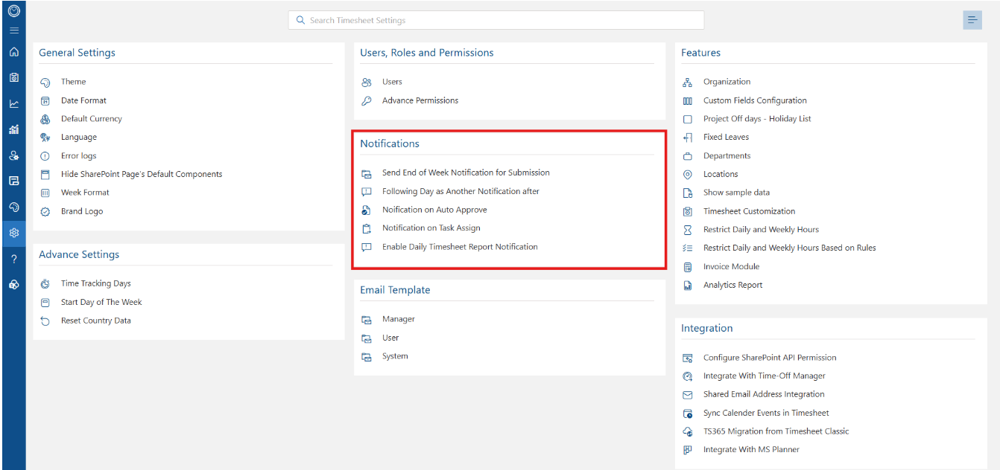
Submission Reminders & Scheduling
1. Send End of the Week Notification
Enables or disables end-of-week submission alerts. When active, reminder emails are automatically generated based on configured schedules to remind team members to finalize and submit their timesheets prior to administrative deadlines.
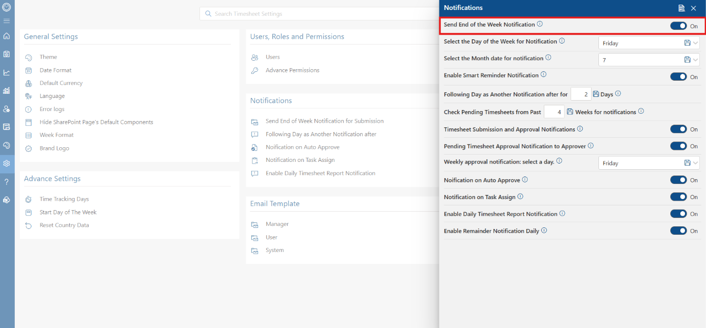
2. Select the Day of the Week for Notification
Establishes the specific weekday on which weekly reminder emails are dispatched. Choosing the target day ensures submission alerts align with your company's operational calendar and reporting cycles.
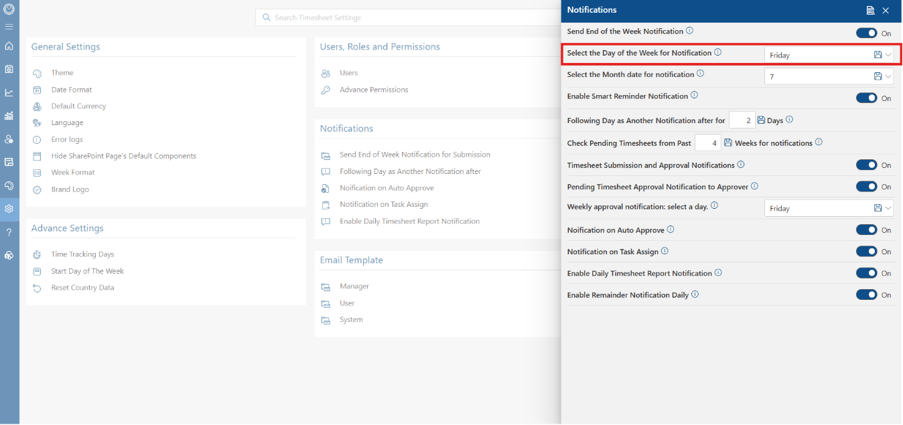
3. Day Selection Dropdown
The weekday selector dropdown includes all seven days, from Sunday through Saturday. Select the preferred day and save the settings to update the automated dispatch schedule.
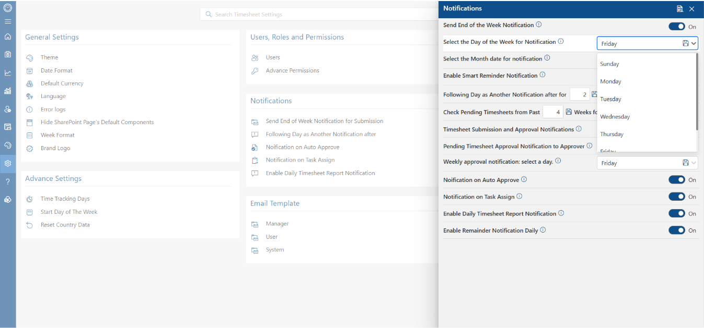
4. Select the Month Date for Notification
Specifies a recurring monthly calendar date for generating timesheet submission reminders. This feature supports organizations that manage time tracking on a monthly or semi-monthly billing schedule.
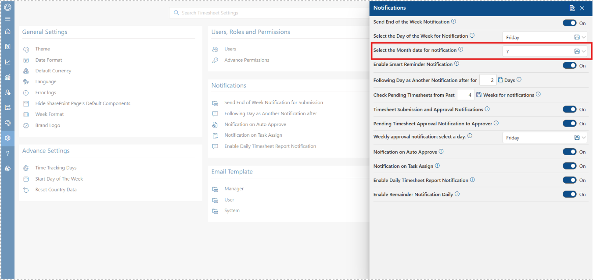
Smart Reminders & Follow-Up Rules
1. Enable Smart Reminder Notification
Activates targeted notifications sent only to users who have unsubmitted or incomplete timesheets. Smart reminders avoid email fatigue by suppressing unnecessary messages for employees who have already submitted their time.
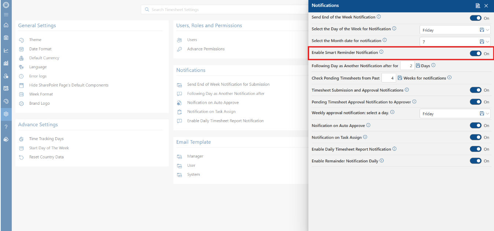
2. Following Day as Another Notification
Schedules a follow-up reminder after a designated number of days if a pending timesheet remains unsubmitted following the initial alert. This secondary notification helps ensure compliance for past-due entries.
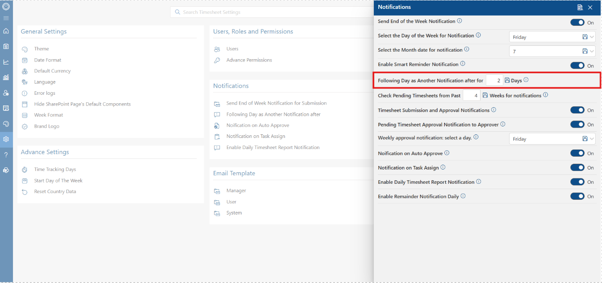
3. Check Pending Timesheets from Past Weeks
Defines how far back the system scans for outstanding timesheets when dispatching automated alerts. Setting a multi-week lookback window ensures past unsubmitted periods are flagged for user completion.
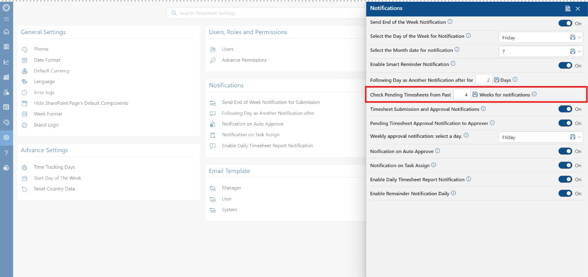
Approval & Workflow Notifications
1. Timesheet Submission and Approval Notifications
Toggles master notifications for submission and approval events. Enabling this keeps both employees and assigned managers informed throughout every stage of the timesheet approval lifecycle.
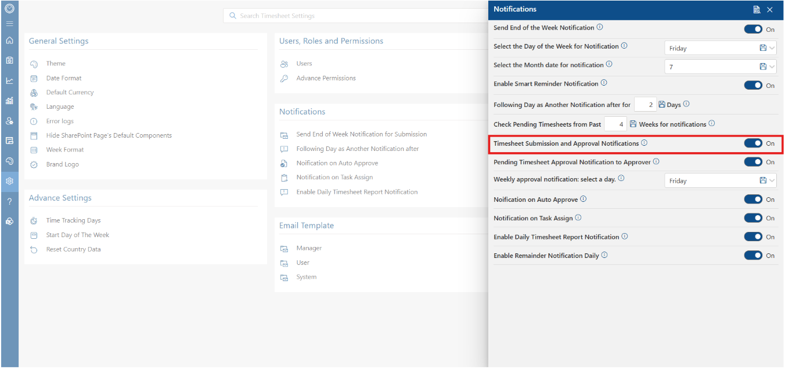
2. Pending Timesheet Approval Notification to Approver
Dispatches automated alerts directly to approvers whenever a submitted timesheet is queued for review. This prompts managers to review and approve submitted time promptly.
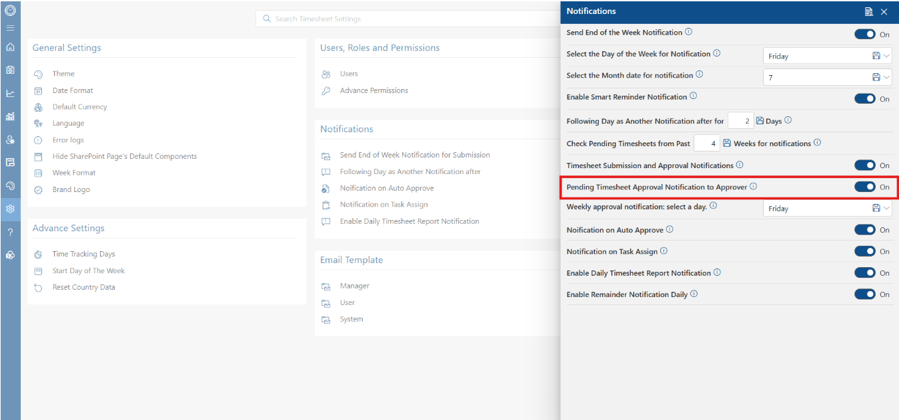
3. Weekly Approval Notification Day
Sets a recurring weekly day for approvers to receive a digest of outstanding timesheets awaiting action. This consolidated summary helps managers process multiple approvals efficiently.
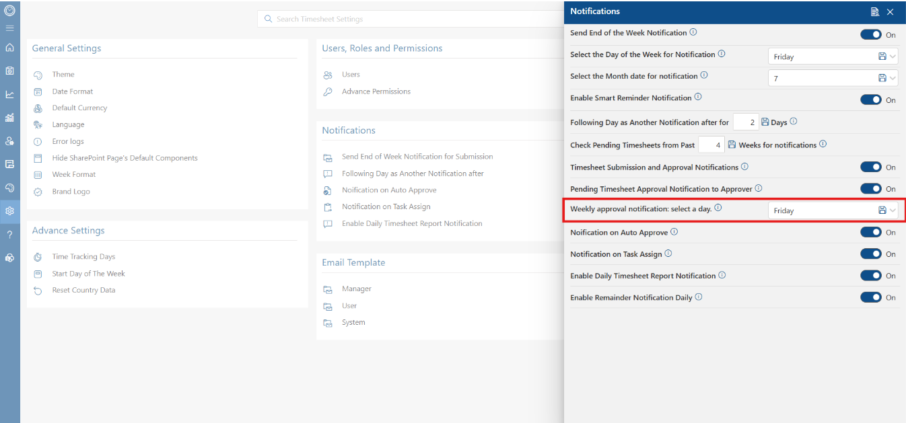
4. Notification on Auto Approve
Sends an informational email alert whenever a timesheet is automatically approved by system rules. This keeps team members aware when their logged hours pass auto-approval thresholds.
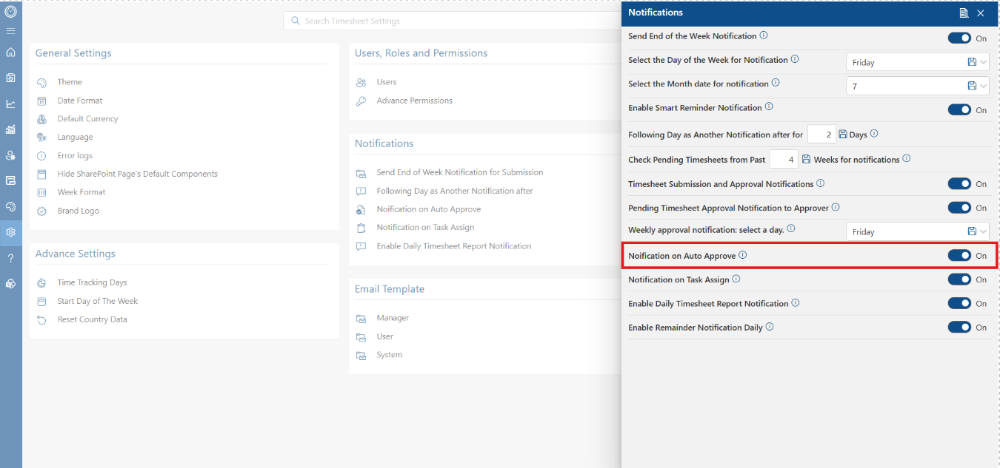
Task & Activity Notifications
1. Notification on Task Assign
Triggers an immediate notification to team members when a new task is assigned to them. Real-time task allocation alerts help employees manage immediate priorities effectively.
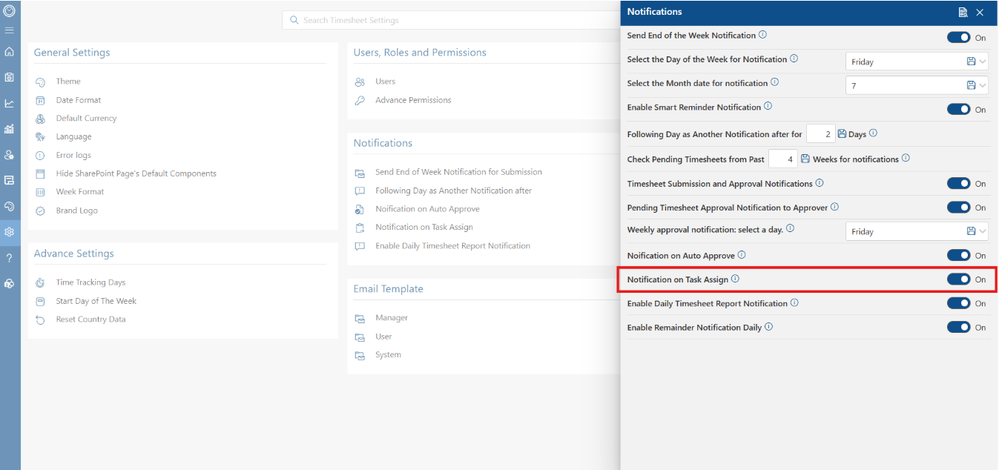
2. Enable Daily Timesheet Report Notification
Sends daily summary reports containing time tracking metrics and submission status directly to designated stakeholders and managers for enhanced daily operations oversight.
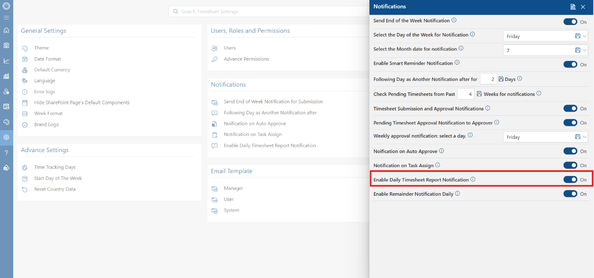
3. Enable Reminder Notification Daily
Enforces recurring daily reminders sent every business day to users with missing or unsubmitted timesheets until all pending entries are fully completed.